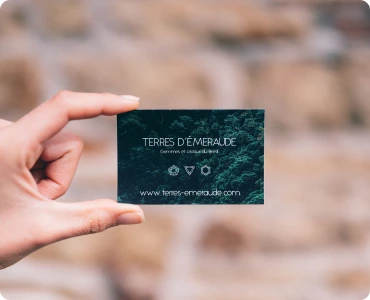
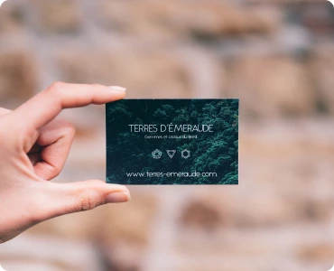

Контентні зображення - зображення, які і є контентом сайту У більшості випадків це растрові зображення (фотографії) (JPG/PNG -> WEBP)
!!!Усі контентні зображення виводяться тегом IMG!!!

Іконки - невеликі прості зображення, які підсилюють ефект тексту, або самостійно несуть певну інформацію У більшості випадків це векторні зображення. (SVG)


Елементи дизайну - веркторні, або растрові зображення (можливо з прозорістю) які є частиною дизайну сайту. Можуть бути як векторні так і растрові (SVG, JPG/PNG -> WEBP)


Контентні зображення - зображення, які і є контентом сайту У більшості випадків це растрові зображення (фотографії) (JPG/PNG -> WEBP)
!!!Усі контентні зображення виводяться тегом IMG!!!
